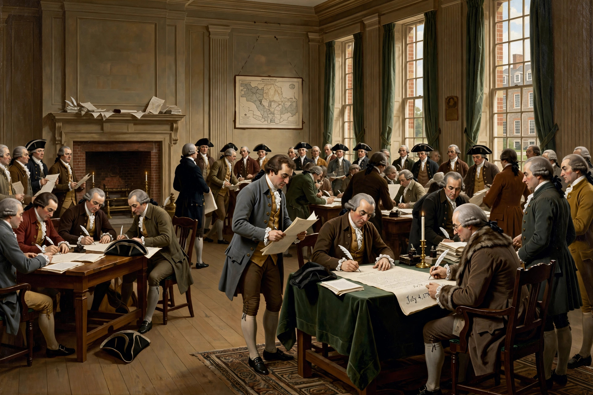

From Wikipedia, the free encyclopedia
| Second Continental Congress | |
|---|---|
| Type | Unicameral revolutionary legislature |
| History | Established May 10, 1775; succeeded by the Congress of the Confederation in 1781 |
| Preceded by | First Continental Congress |
| Succeeded by | Congress of the Confederation |
| Leadership | Presidents included Peyton Randolph, John Hancock, Henry Laurens, John Jay, Samuel Huntington |
| Meeting place | Independence Hall, Philadelphia, Pennsylvania |

The Second Continental Congress was a convention of delegates from the Thirteen Colonies that convened in Philadelphia on May 10, 1775, shortly after the outbreak of the American Revolutionary War. It succeeded the First Continental Congress, which had met in the autumn of 1774. The Second Congress managed the colonial war effort, organized the Continental Army, issued paper currency, and conducted foreign relations, in effect serving as the de facto national government of the emerging United States.
Its most famous act was the adoption of the United States Declaration of Independence on July 4, 1776, which announced that the colonies regarded themselves as independent states. After ratifying the Articles of Confederation in 1781, the Congress was replaced by the Congress of the Confederation and ceased to exist as a separate body.
Delegates had agreed at the close of the First Continental Congress to reconvene if Parliament did not redress colonial grievances. Fighting at Lexington and Concord in April 1775 transformed the dispute into open war before the second congress assembled, so the delegates who gathered in Philadelphia in May 1775 faced the task of coordinating a war already in progress.
Among the Congress's first major actions were the creation of the Continental Army on June 14, 1775, and the appointment of George Washington as its commander-in-chief. The Congress also adopted the Olive Branch Petition in July 1775 as a final attempt at reconciliation with King George III, even as it issued a Declaration of the Causes and Necessity of Taking Up Arms.
Over its years of operation the Congress managed diplomacy, concluding the Treaty of Alliance with France in 1778; appointed ambassadors, including Benjamin Franklin in Paris; authorized a navy; and struggled continuously with finance, lacking power to tax and relying on requisitions from the states and on foreign loans.
On June 7, 1776, Richard Henry Lee introduced a resolution declaring the colonies independent. Congress appointed a Committee of Five to draft a formal declaration, principally written by Thomas Jefferson. Congress adopted the Declaration on July 4, 1776, after voting for independence itself on July 2. John Hancock, as president of the Congress, signed the engrossed copy prominently.
Congress drafted the Articles of Confederation in 1776–1777 and sent them to the states for ratification. Disputes over western land claims delayed ratification until Maryland assented in 1781. When the Articles took effect on March 1, 1781, the Second Continental Congress gave way to the Confederation Congress.